<!doctype html>
<html lang="tr" data-resolution="landscape">
<head>
  <meta charset="UTF-8" />
  <meta name="viewport" content="width=1920, height=1080" />
  <title>ADC #3 - Agentic Data Engineering: DataOps'ta kuraldan ajana</title>
  <link rel="stylesheet" href="assets/fonts/fonts.css" />
  <script src="vendor/gsap.min.js"></script>
  <script src="vendor/hyperframe.runtime.iife.js"></script>
  <style>
    *,*::before,*::after{box-sizing:border-box;margin:0;padding:0}
    :root{--paper:#efefef;--paper2:#e1e4e8;--ink:#1c232d;--night:#1c2e47;--chalk:#efefef;--coral:#e8940c;--blue:#1c2e47;--green:#22c55e;--red:#ef4444;--muted:#5b6674;--line:#b8bec6;--dline:#52627a;--tint:#828c9a;--x:132px;--y:96px;--brand-logo-edge:132px;--brand-logo-top:142.875px}
    html,body{width:1920px;height:1080px;overflow:hidden;background:var(--night);font-family:"Inter",system-ui,sans-serif;color:var(--ink)}
    .scene{position:absolute;inset:0;width:1920px;height:1080px;overflow:hidden;opacity:0;visibility:hidden;pointer-events:none}.clip{position:absolute;inset:0;overflow:hidden}.paper{--green:#1ca44e;background:var(--paper);color:var(--ink)}.dark{background:var(--night);color:var(--chalk)}
    .grain{position:absolute;left:44px;right:44px;top:44px;bottom:44px;border:2px solid rgba(28,35,45,.10);pointer-events:none}.dark .grain{border-color:rgba(239,239,239,.12)}
    .content{position:absolute;inset:0;padding:var(--y) var(--x) 118px;display:flex;flex-direction:column;justify-content:center}.top{justify-content:flex-start}.kicker{font:700 22px/1.2 "Inter",system-ui,sans-serif;letter-spacing:.11em;text-transform:uppercase;color:var(--coral);margin-bottom:28px}.kicker.literalCase{text-transform:none}.paper .kicker{color:var(--blue)}
    h1{font-size:108px;line-height:.98;letter-spacing:-.052em;font-weight:830;max-width:1550px}h2{font-size:73px;line-height:1.08;letter-spacing:-.036em;font-weight:780;max-width:1600px;text-wrap:balance}h3{font-size:38px;line-height:1.16;letter-spacing:-.018em}p{font-size:34px;line-height:1.4}.lede{max-width:1380px;margin-top:32px;color:var(--muted);font-size:40px}.dark .lede{color:#c8cdd3}.accent{color:var(--coral)}.paper .accent{color:var(--blue)}.blue{color:var(--blue)}.dark .blue{color:#c0c7d0}.green{color:var(--green)}.red{color:var(--red)}
    .folio{position:absolute;right:58px;top:46px;font:600 21px/1 "JetBrains Mono",monospace;color:var(--muted)}.source{position:absolute;left:var(--x);bottom:48px;max-width:1250px;font:500 18px/1.35 "JetBrains Mono",monospace;color:#5b6674}.dark .folio,.dark .source,.dark .micro{color:#c8cdd3}.micro{font:520 22px/1.45 "JetBrains Mono",monospace;color:var(--muted)}
    .rule{height:2px;background:var(--line);margin:34px 0}.dark .rule{background:var(--dline)}.big{font-size:150px;line-height:.92;font-weight:850;letter-spacing:-.065em}.heroStack{line-height:1.04;letter-spacing:-.055em}.quote{border-left:8px solid var(--coral);padding-left:48px;font-size:64px;line-height:1.17;font-weight:720;max-width:1500px}
    .grid2{display:grid;grid-template-columns:1fr 1fr;gap:28px;margin-top:54px}.grid3{display:grid;grid-template-columns:repeat(3,1fr);gap:24px;margin-top:54px}.card{border:2px solid var(--line);padding:34px;min-height:245px;background:rgba(255,255,255,.42)}.dark .card{border-color:var(--dline);background:#253a58}.card h3{margin-bottom:20px}.card p{color:var(--muted);font-size:28px}.dark .card p{color:#c8cdd3}.card.blueBorder{border-top:6px solid var(--blue)}.card.coralBorder{border-top:6px solid var(--coral)}.card.greenBorder{border-top:6px solid var(--green)}
    .definitionClaim{font-size:62px;max-width:1500px}.definitionGrid{display:grid;grid-template-columns:1fr 1fr;gap:20px;margin-top:42px}.definitionCard{display:grid;grid-template-columns:82px 1fr;align-items:center;gap:24px;min-height:190px;padding:26px 30px;border:2px solid var(--dline);background:#253a58}.definitionCard:nth-child(1){border-top:6px solid var(--coral)}.definitionCard:nth-child(2){border-top:6px solid #c0c7d0}.definitionCard:nth-child(3){border-top:6px solid var(--coral)}.definitionCard:nth-child(4){border-top:6px solid var(--green)}.definitionIcon{width:76px;height:76px;border:2px solid currentColor;border-radius:50%;display:grid;place-items:center;color:var(--coral);background:#1c2e47}.definitionCard:nth-child(2) .definitionIcon{color:#c0c7d0}.definitionCard:nth-child(4) .definitionIcon{color:var(--green)}.definitionIcon svg{width:44px;height:44px;fill:none;stroke:currentColor;stroke-width:2.2;stroke-linecap:round;stroke-linejoin:round}.definitionCard h3{margin:0 0 10px;font-size:34px}.definitionCard p{font-size:24px;line-height:1.35;color:#c8cdd3}
    .flow{display:flex;align-items:stretch;gap:14px;margin-top:62px}.step{flex:1;min-height:170px;padding:28px 24px;border-top:4px solid var(--ink);background:var(--paper2)}.dark .step{border-color:var(--chalk);background:#253a58}.step b{display:block;font-size:28px;margin-bottom:16px}.step span{font-size:23px;line-height:1.35;color:var(--muted)}
    .pipe{display:grid;grid-template-columns:1fr 70px 1fr 70px 1fr;align-items:center;gap:15px;margin-top:68px}.node{min-height:170px;border:2px solid var(--line);padding:30px;display:flex;flex-direction:column;justify-content:space-between}.dark .node{border-color:var(--dline)}.node strong{font-size:34px}.node small{font:500 20px/1.35 "JetBrains Mono",monospace;color:var(--muted)}.arrow{text-align:center;font-size:52px;color:var(--coral)}
    .map{display:grid;grid-template-columns:1fr 1fr;gap:20px;margin-top:42px}.region{position:relative;min-height:235px;padding:32px;border:2px solid var(--line);background:rgba(255,255,255,.42);overflow:hidden}.dark .region{border-color:var(--dline);background:rgba(239,239,239,.04)}.region h3{margin-bottom:16px}.region p{font-size:26px;color:var(--muted)}.region::after{content:attr(data-n);position:absolute;right:20px;bottom:-18px;font-size:102px;font-weight:850;color:rgba(28,35,45,.07)}.dark .region::after{color:rgba(239,239,239,.08)}.region.active{border-color:var(--coral);background:rgba(232,148,12,.13)}.region.active h3{color:var(--blue)}.dark .region.active h3{color:var(--coral)}
    .axis{display:grid;grid-template-columns:1fr 100px 1fr;align-items:center;gap:28px;margin-top:64px}.axis .card{min-height:365px}.plus{font-size:78px;text-align:center;color:var(--coral)}
    .loop{display:grid;grid-template-columns:repeat(7,1fr);align-items:center;gap:12px;margin-top:68px}.loopbox{min-height:180px;padding:18px;border:2px solid var(--dline);display:grid;place-items:center;text-align:center;font-size:27px;font-weight:680;background:#253a58}.loopbox b{display:block;font-size:27px}.loopbox span{display:block;margin-top:12px;font-size:18px;line-height:1.3;font-weight:520;color:#c8cdd3}.loopbox.evidence{border-color:#c0c7d0}.loopbox.action{border-color:var(--coral)}.loopbox.verify{border-color:var(--green)}.miniarr{font-size:36px;text-align:center;color:#aeb6c1}
    .layers{display:flex;flex-direction:column;gap:14px;margin-top:46px}.layer{display:grid;grid-template-columns:300px 1fr;align-items:center;min-height:78px;border:2px solid var(--line);padding:15px 26px}.layer b{font-size:27px}.layer span{font-size:24px;color:var(--muted)}
    .ladder{display:flex;align-items:flex-end;gap:16px;height:500px;margin-top:30px}.rung{flex:1;border:2px solid var(--line);border-bottom:8px solid var(--ink);padding:20px;background:rgba(255,255,255,.24)}.rung:nth-child(1){height:145px}.rung:nth-child(2){height:215px}.rung:nth-child(3){height:285px}.rung:nth-child(4){height:355px}.rung:nth-child(5){height:425px}.rung:nth-child(6){height:495px;border-color:var(--coral)}.rung b{font-size:25px}.rung span{display:block;margin-top:12px;font:500 17px/1.3 "JetBrains Mono",monospace;color:var(--muted)}
    .questions{display:grid;grid-template-columns:1fr 1fr;gap:20px;margin-top:50px}.question{min-height:170px;border:2px solid var(--line);padding:28px;font-size:31px;line-height:1.25;font-weight:680}.question::before{content:"?";display:block;color:var(--coral);font:750 25px/1 "JetBrains Mono",monospace;margin-bottom:16px}
    .table{display:grid;grid-template-columns:1fr 1fr 1.4fr;margin-top:42px;border-top:2px solid var(--dline)}.cell{min-height:68px;padding:17px 20px;border-right:2px solid var(--dline);border-bottom:2px solid var(--dline);font-size:23px;line-height:1.3}.cell:nth-child(3n+1){border-left:2px solid var(--dline)}.head{color:var(--coral);font:650 19px/1.2 "JetBrains Mono",monospace;text-transform:uppercase;letter-spacing:.08em}
    .watch{display:grid;grid-template-columns:repeat(3,1fr);gap:22px;margin-top:56px}.watch .card{min-height:320px}.num{font:800 72px/1 "JetBrains Mono",monospace;color:var(--coral);opacity:.8;margin-bottom:28px}
    .coverLayout{position:relative;display:grid;grid-template-columns:960px 520px;gap:48px;align-items:center;width:100%;transform:translateY(76px)}.coverText{display:flex;flex-direction:column;align-items:flex-start}.coverText h1{font-size:104px;max-width:1050px}.coverLogoFrame{position:absolute;left:0;top:-215px;width:200px;height:190px;overflow:hidden}.coverLogo{width:250px;height:250px;object-fit:contain;transform:translate(-39px,-27px)}.coverEdition{margin-bottom:18px;font:700 42px/1.1 "JetBrains Mono",monospace;letter-spacing:.12em;color:var(--coral)}.coverPortraitWrap{display:flex;flex-direction:column;align-items:center;gap:28px}.coverPortrait{width:430px;height:430px;border-radius:50%;object-fit:cover;object-position:center 34%;border:10px solid var(--coral);box-shadow:0 0 0 2px rgba(239,239,239,.35)}.speakerLine{font-size:29px;line-height:1.25;font-weight:650;text-align:center;color:var(--chalk)}
    .statusHeroLayout{display:grid;grid-template-columns:.82fr 1.18fr;gap:42px;align-items:center;margin-top:50px}.dashboardCard,.airflowCard{min-height:390px;padding:28px 30px 24px;border-top:6px solid var(--green)}.dashboardHeader,.airflowHeader{display:flex;align-items:center;justify-content:space-between;gap:24px}.dashboardEyebrow,.airflowEyebrow{font:650 18px/1.2 "JetBrains Mono",monospace;letter-spacing:.08em;text-transform:uppercase;color:#c8cdd3}.dashboardCard h3,.airflowCard h3{margin:5px 0 0;font-size:34px}.dashboardStatus,.airflowStatus{display:flex;align-items:center;gap:10px;padding:12px 18px;border:2px solid var(--green);border-radius:999px;font-size:22px;font-weight:700;color:var(--green)}.dashboardStatus::before,.airflowStatus::before{content:"";width:12px;height:12px;border-radius:50%;background:var(--green);box-shadow:0 0 18px rgba(34,197,94,.65)}.dashboardMetrics{display:grid;grid-template-columns:repeat(3,1fr);gap:16px;margin-top:34px}.dashboardMetric{padding:24px 20px;border:2px solid #52627a;background:#1c2e47}.dashboardMetric span{display:block;color:#aeb6c1;font-size:19px}.dashboardMetric strong{display:block;margin-top:12px;color:var(--chalk);font-size:34px}.dashboardFooter{margin-top:28px;padding-top:20px;border-top:2px solid #52627a;color:#aeb6c1;font:500 18px/1.3 "JetBrains Mono",monospace}.airflowStatus.failed{border-color:var(--coral);color:var(--coral)}.airflowStatus.failed::before{background:var(--coral);box-shadow:0 0 18px rgba(249,115,98,.55)}.incidentCompare{align-items:stretch;margin-top:40px}.incidentCompare>.card{min-height:360px}.airflowCard.failedCard{border-top-color:var(--coral)}.airflowDag{display:block;width:100%;height:auto;margin-top:22px}.airflowDag text{font-family:"Inter",system-ui,sans-serif}.airflowDag .runMeta{fill:#c8cdd3;font:500 17px "JetBrains Mono",monospace}.airflowDag .taskName{fill:var(--chalk);font-size:22px;font-weight:700}.airflowDag .taskState{fill:#aeb6c1;font-size:17px}.airflowDag .taskState.failed{fill:var(--coral)}.airflowDag .check{fill:none;stroke:var(--chalk);stroke-width:5;stroke-linecap:round;stroke-linejoin:round}
    .sectionLogoFrame{position:absolute;right:var(--brand-logo-edge);top:var(--brand-logo-top);width:200px;height:190px;overflow:hidden}.sectionLogo{width:250px;height:250px;object-fit:contain;transform:translate(-39px,-27px)}.sectionMark{font:700 24px/1.2 "JetBrains Mono",monospace;letter-spacing:.12em;text-transform:uppercase;color:var(--coral);margin-bottom:34px}.sectionTitle{font-size:108px;line-height:.98;letter-spacing:-.05em;font-weight:830;max-width:1450px}.sectionQuestion{margin-top:42px;max-width:1250px;font-size:38px;line-height:1.35;color:#c8cdd3}
    .thanksClosing{display:grid;grid-template-columns:minmax(0,1fr) 480px;gap:90px;align-items:center;width:100%}.thanksClosing .qrs{margin-top:0;justify-content:center}.qrs{display:flex;gap:34px;margin-top:38px}.qr{background:#fff;padding:12px;width:198px;height:198px;object-fit:contain}.qrlabel{width:198px;margin-top:10px;text-align:center;font:520 17px/1.35 "JetBrains Mono",monospace;color:#c8cdd3}.appendixButton{position:absolute;right:70px;bottom:170px;width:320px;height:88px;border:2px solid var(--coral);display:grid;place-items:center;font:700 23px/1 "Inter",system-ui,sans-serif;background:#253a58}
    .list{display:flex;flex-direction:column;gap:17px;margin-top:40px}.item{display:grid;grid-template-columns:75px 1fr;gap:20px;border-bottom:2px solid var(--line);padding-bottom:16px}.item b{color:var(--coral);font:700 23px/1.3 "JetBrains Mono",monospace}.paper .item b{color:#c07a0a}.item p{font-size:28px}
    .revealRail{position:absolute;right:66px;top:50%;display:flex;flex-direction:column;gap:14px;transform:translateY(-50%);z-index:9}.revealDot{width:13px;height:13px;border:2px solid var(--tint);border-radius:50%;background:transparent}.dark .revealDot{border-color:#c0c7d0}.revealDot.isNext{border-color:var(--coral)}
    [data-reveal]{opacity:0}
  </style>
</head>
<body>
  <script type="application/hyperframes-slideshow+json">
  {
    "slides": [
      {
        "sceneId": "kapak"
      },
      {
        "sceneId": "her-sey-yesil",
        "fragments": [
          9.05,
          11.07,
          11.97
        ]
      },
      {
        "sceneId": "bolum-sorunu-gormek"
      },
      {
        "sceneId": "son-kosu-basarisiz",
        "fragments": [
          20.05,
          21.07,
          21.97
        ]
      },
      {
        "sceneId": "sunumun-sorusu"
      },
      {
        "sceneId": "degisiklik-uretime",
        "fragments": [
          40.05,
          41.07,
          41.67,
          42.27,
          42.87
        ]
      },
      {
        "sceneId": "dataops-dongusu",
        "fragments": [
          50.05,
          51.07,
          51.77,
          52.47
        ]
      },
      {
        "sceneId": "kurallarla-yonetim",
        "fragments": [
          60.05,
          61.07,
          61.77
        ]
      },
      {
        "sceneId": "kuralin-siniri"
      },
      {
        "sceneId": "bolum-kuraldan-ajana"
      },
      {
        "sceneId": "otomasyondan-ajana",
        "fragments": [
          80.05,
          81.07,
          81.77,
          82.47
        ]
      },
      {
        "sceneId": "ade-tanimi",
        "fragments": [
          90.05,
          91.07,
          91.67,
          92.27,
          92.87
        ]
      },
      {
        "sceneId": "iki-yon",
        "fragments": [
          100.05,
          101.07,
          101.87
        ]
      },
      {
        "sceneId": "kapsam-haritasi",
        "fragments": [
          110.05,
          111.07,
          111.87
        ]
      },
      {
        "sceneId": "tasarla-gelistir"
      },
      {
        "sceneId": "islet-iyilestir"
      },
      {
        "sceneId": "anlamlandir-yonet"
      },
      {
        "sceneId": "ajanlar-icin-veri"
      },
      {
        "sceneId": "tek-gorev-degil"
      },
      {
        "sceneId": "bolum-guvenilir-ajan"
      },
      {
        "sceneId": "model-tek-basina-degil",
        "fragments": [
          170.05,
          171.07,
          171.77
        ]
      },
      {
        "sceneId": "kanit-dongusu",
        "fragments": [
          180.05,
          180.97,
          181.47,
          181.97,
          182.47
        ]
      },
      {
        "sceneId": "baglam-kaynaklari",
        "fragments": [
          190.05,
          191.07,
          191.67,
          192.27
        ]
      },
      {
        "sceneId": "grounding-dogrulama",
        "fragments": [
          200.05,
          201.07,
          201.97
        ]
      },
      {
        "sceneId": "dogrulayici-merkezde",
        "fragments": [
          210.05,
          211.07,
          211.77,
          212.47
        ]
      },
      {
        "sceneId": "yetki-siniri",
        "fragments": [
          220.05,
          221.07,
          221.77
        ]
      },
      {
        "sceneId": "risk-yuzeyleri",
        "fragments": [
          230.05,
          231.07,
          231.77
        ]
      },
      {
        "sceneId": "guardrail-katmanlari",
        "fragments": [
          240.05,
          240.97,
          241.47,
          241.97,
          242.47
        ]
      },
      {
        "sceneId": "otonomi-merdiveni",
        "fragments": [
          250.05,
          250.97,
          251.47,
          251.97,
          252.47
        ]
      },
      {
        "sceneId": "ilk-kullanim-alani",
        "fragments": [
          260.05,
          261.07,
          261.67,
          262.27,
          262.87
        ]
      },
      {
        "sceneId": "bolum-kavramdan-sisteme"
      },
      {
        "sceneId": "demo-haritadaki-yeri",
        "fragments": [
          270.05,
          271.07,
          271.87
        ]
      },
      {
        "sceneId": "demo-stack",
        "fragments": [
          280.05,
          281.07,
          281.77
        ]
      },
      {
        "sceneId": "demoda-izleyin",
        "fragments": [
          290.05,
          291.07,
          291.67,
          292.27
        ]
      },
      {
        "sceneId": "ana-mesaj"
      },
      {
        "sceneId": "tesekkur",
        "hotspots": [
          {
            "id": "teknik-ekler",
            "label": "Teknik ekler",
            "target": "teknik-ekler",
            "region": {
              "x": 76,
              "y": 74,
              "w": 18,
              "h": 10
            }
          }
        ]
      }
    ],
    "slideSequences": [
      {
        "id": "teknik-ekler",
        "label": "Teknik ekler",
        "slides": [
          {
            "sceneId": "ek-mimari"
          },
          {
            "sceneId": "ek-graf"
          },
          {
            "sceneId": "ek-langgraph"
          },
          {
            "sceneId": "ek-mcp"
          },
          {
            "sceneId": "ek-hafiza-planlama"
          },
          {
            "sceneId": "ek-yetki"
          },
          {
            "sceneId": "ek-dogrulama"
          },
          {
            "sceneId": "ek-production"
          }
        ]
      }
    ]
  }
  </script>

  <div id="scene-root" data-composition-id="root" data-start="0" data-duration="400" data-width="1920" data-height="1080" style="position:relative;width:1920px;height:1080px;overflow:hidden">
  <!-- Main line: 36 slides. The final two are used after the 15-minute demo. -->
  <div id="scene-kapak" class="scene dark" data-composition-id="kapak" data-start="0" data-duration="9" data-label="Kapak" data-width="1920" data-height="1080"><section id="clip-kapak" class="clip" data-start="0" data-duration="9" data-track-index="1"><div class="grain"></div><div class="content" data-body="kapak"></div></section></div>
  <div id="scene-her-sey-yesil" class="scene dark" data-composition-id="her-sey-yesil" data-start="9" data-duration="10" data-label="Her şey yeşil" data-width="1920" data-height="1080"><section id="clip-her-sey-yesil" class="clip" data-start="0" data-duration="10" data-track-index="1"><div class="grain"></div><div class="content" data-body="her-sey-yesil"></div></section></div>
  <div id="scene-bolum-sorunu-gormek" class="scene dark" data-composition-id="bolum-sorunu-gormek" data-start="19" data-duration="1" data-label="Bölüm 01: Sorunu Görmek" data-width="1920" data-height="1080"><section id="clip-bolum-sorunu-gormek" class="clip" data-start="0" data-duration="1" data-track-index="1"><div class="grain"></div><div class="content" data-body="bolum-sorunu-gormek"></div></section></div>
  <div id="scene-son-kosu-basarisiz" class="scene paper" data-composition-id="son-kosu-basarisiz" data-start="20" data-duration="10" data-label="Son DAG run başarısız" data-width="1920" data-height="1080"><section id="clip-son-kosu-basarisiz" class="clip" data-start="0" data-duration="10" data-track-index="1"><div class="grain"></div><div class="content" data-body="son-kosu-basarisiz"></div></section></div>
  <div id="scene-sunumun-sorusu" class="scene dark" data-composition-id="sunumun-sorusu" data-start="30" data-duration="10" data-label="Sunumun sorusu" data-width="1920" data-height="1080"><section id="clip-sunumun-sorusu" class="clip" data-start="0" data-duration="10" data-track-index="1"><div class="grain"></div><div class="content" data-body="sunumun-sorusu"></div></section></div>
  <div id="scene-degisiklik-uretime" class="scene paper" data-composition-id="degisiklik-uretime" data-start="40" data-duration="10" data-label="Bir veri değişikliği üretime çıkar" data-width="1920" data-height="1080"><section id="clip-degisiklik-uretime" class="clip" data-start="0" data-duration="10" data-track-index="1"><div class="grain"></div><div class="content" data-body="degisiklik-uretime"></div></section></div>
  <div id="scene-dataops-dongusu" class="scene paper" data-composition-id="dataops-dongusu" data-start="50" data-duration="10" data-label="DataOps döngüsü" data-width="1920" data-height="1080"><section id="clip-dataops-dongusu" class="clip" data-start="0" data-duration="10" data-track-index="1"><div class="grain"></div><div class="content" data-body="dataops-dongusu"></div></section></div>
  <div id="scene-kurallarla-yonetim" class="scene paper" data-composition-id="kurallarla-yonetim" data-start="60" data-duration="10" data-label="Kurallarla yönetim" data-width="1920" data-height="1080"><section id="clip-kurallarla-yonetim" class="clip" data-start="0" data-duration="10" data-track-index="1"><div class="grain"></div><div class="content" data-body="kurallarla-yonetim"></div></section></div>
  <div id="scene-kuralin-siniri" class="scene dark" data-composition-id="kuralin-siniri" data-start="70" data-duration="9" data-label="Kuralın sınırı" data-width="1920" data-height="1080"><section id="clip-kuralin-siniri" class="clip" data-start="0" data-duration="9" data-track-index="1"><div class="grain"></div><div class="content" data-body="kuralin-siniri"></div></section></div>
  <div id="scene-bolum-kuraldan-ajana" class="scene dark" data-composition-id="bolum-kuraldan-ajana" data-start="79" data-duration="1" data-label="Bölüm 02: Kuraldan Ajana" data-width="1920" data-height="1080"><section id="clip-bolum-kuraldan-ajana" class="clip" data-start="0" data-duration="1" data-track-index="1"><div class="grain"></div><div class="content" data-body="bolum-kuraldan-ajana"></div></section></div>
  <div id="scene-otomasyondan-ajana" class="scene paper" data-composition-id="otomasyondan-ajana" data-start="80" data-duration="10" data-label="Otomasyondan ajana" data-width="1920" data-height="1080"><section id="clip-otomasyondan-ajana" class="clip" data-start="0" data-duration="10" data-track-index="1"><div class="grain"></div><div class="content" data-body="otomasyondan-ajana"></div></section></div>
  <div id="scene-ade-tanimi" class="scene dark" data-composition-id="ade-tanimi" data-start="90" data-duration="10" data-label="Agentic Data Engineering tanımı" data-width="1920" data-height="1080"><section id="clip-ade-tanimi" class="clip" data-start="0" data-duration="10" data-track-index="1"><div class="grain"></div><div class="content" data-body="ade-tanimi"></div></section></div>
  <div id="scene-iki-yon" class="scene paper" data-composition-id="iki-yon" data-start="100" data-duration="10" data-label="Kavramın iki yönü" data-width="1920" data-height="1080"><section id="clip-iki-yon" class="clip" data-start="0" data-duration="10" data-track-index="1"><div class="grain"></div><div class="content" data-body="iki-yon"></div></section></div>
  <div id="scene-kapsam-haritasi" class="scene paper" data-composition-id="kapsam-haritasi" data-start="110" data-duration="10" data-label="Dört bölgeli kapsam haritası" data-width="1920" data-height="1080"><section id="clip-kapsam-haritasi" class="clip" data-start="0" data-duration="10" data-track-index="1"><div class="grain"></div><div class="content top" data-body="kapsam-haritasi"></div></section></div>
  <div id="scene-tasarla-gelistir" class="scene paper" data-composition-id="tasarla-gelistir" data-start="120" data-duration="10" data-label="Tasarla ve geliştir" data-width="1920" data-height="1080"><section id="clip-tasarla-gelistir" class="clip" data-start="0" data-duration="10" data-track-index="1"><div class="grain"></div><div class="content top" data-body="tasarla-gelistir"></div></section></div>
  <div id="scene-islet-iyilestir" class="scene paper" data-composition-id="islet-iyilestir" data-start="130" data-duration="10" data-label="İşlet ve iyileştir" data-width="1920" data-height="1080"><section id="clip-islet-iyilestir" class="clip" data-start="0" data-duration="10" data-track-index="1"><div class="grain"></div><div class="content top" data-body="islet-iyilestir"></div></section></div>
  <div id="scene-anlamlandir-yonet" class="scene paper" data-composition-id="anlamlandir-yonet" data-start="140" data-duration="10" data-label="Anlamlandır ve yönet" data-width="1920" data-height="1080"><section id="clip-anlamlandir-yonet" class="clip" data-start="0" data-duration="10" data-track-index="1"><div class="grain"></div><div class="content top" data-body="anlamlandir-yonet"></div></section></div>
  <div id="scene-ajanlar-icin-veri" class="scene paper" data-composition-id="ajanlar-icin-veri" data-start="150" data-duration="10" data-label="Ajanlar için veri sun" data-width="1920" data-height="1080"><section id="clip-ajanlar-icin-veri" class="clip" data-start="0" data-duration="10" data-track-index="1"><div class="grain"></div><div class="content top" data-body="ajanlar-icin-veri"></div></section></div>
  <div id="scene-tek-gorev-degil" class="scene dark" data-composition-id="tek-gorev-degil" data-start="160" data-duration="9" data-label="Tek görev değil" data-width="1920" data-height="1080"><section id="clip-tek-gorev-degil" class="clip" data-start="0" data-duration="9" data-track-index="1"><div class="grain"></div><div class="content" data-body="tek-gorev-degil"></div></section></div>
  <div id="scene-bolum-guvenilir-ajan" class="scene dark" data-composition-id="bolum-guvenilir-ajan" data-start="169" data-duration="1" data-label="Bölüm 03: Güvenilir Ajan" data-width="1920" data-height="1080"><section id="clip-bolum-guvenilir-ajan" class="clip" data-start="0" data-duration="1" data-track-index="1"><div class="grain"></div><div class="content" data-body="bolum-guvenilir-ajan"></div></section></div>
  <div id="scene-model-tek-basina-degil" class="scene dark" data-composition-id="model-tek-basina-degil" data-start="170" data-duration="10" data-label="Model tek başına ajan değildir" data-width="1920" data-height="1080"><section id="clip-model-tek-basina-degil" class="clip" data-start="0" data-duration="10" data-track-index="1"><div class="grain"></div><div class="content top" data-body="model-tek-basina-degil"></div></section></div>
  <div id="scene-kanit-dongusu" class="scene dark" data-composition-id="kanit-dongusu" data-start="180" data-duration="10" data-label="Kanıtla beslenen döngü" data-width="1920" data-height="1080"><section id="clip-kanit-dongusu" class="clip" data-start="0" data-duration="10" data-track-index="1"><div class="grain"></div><div class="content" data-body="kanit-dongusu"></div></section></div>
  <div id="scene-baglam-kaynaklari" class="scene dark" data-composition-id="baglam-kaynaklari" data-start="190" data-duration="10" data-label="Bağlam kaynakları" data-width="1920" data-height="1080"><section id="clip-baglam-kaynaklari" class="clip" data-start="0" data-duration="10" data-track-index="1"><div class="grain"></div><div class="content" data-body="baglam-kaynaklari"></div></section></div>
  <div id="scene-grounding-dogrulama" class="scene paper" data-composition-id="grounding-dogrulama" data-start="200" data-duration="10" data-label="Grounding ve doğrulama" data-width="1920" data-height="1080"><section id="clip-grounding-dogrulama" class="clip" data-start="0" data-duration="10" data-track-index="1"><div class="grain"></div><div class="content" data-body="grounding-dogrulama"></div></section></div>
  <div id="scene-dogrulayici-merkezde" class="scene paper" data-composition-id="dogrulayici-merkezde" data-start="210" data-duration="10" data-label="Doğrulayıcı merkezde" data-width="1920" data-height="1080"><section id="clip-dogrulayici-merkezde" class="clip" data-start="0" data-duration="10" data-track-index="1"><div class="grain"></div><div class="content" data-body="dogrulayici-merkezde"></div></section></div>
  <div id="scene-yetki-siniri" class="scene paper" data-composition-id="yetki-siniri" data-start="220" data-duration="10" data-label="Yetki sınırı" data-width="1920" data-height="1080"><section id="clip-yetki-siniri" class="clip" data-start="0" data-duration="10" data-track-index="1"><div class="grain"></div><div class="content" data-body="yetki-siniri"></div></section></div>
  <div id="scene-risk-yuzeyleri" class="scene paper" data-composition-id="risk-yuzeyleri" data-start="230" data-duration="10" data-label="Risk yüzeyleri" data-width="1920" data-height="1080"><section id="clip-risk-yuzeyleri" class="clip" data-start="0" data-duration="10" data-track-index="1"><div class="grain"></div><div class="content" data-body="risk-yuzeyleri"></div></section></div>
  <div id="scene-guardrail-katmanlari" class="scene paper" data-composition-id="guardrail-katmanlari" data-start="240" data-duration="10" data-label="Guardrail katmanları" data-width="1920" data-height="1080"><section id="clip-guardrail-katmanlari" class="clip" data-start="0" data-duration="10" data-track-index="1"><div class="grain"></div><div class="content" data-body="guardrail-katmanlari"></div></section></div>
  <div id="scene-otonomi-merdiveni" class="scene paper" data-composition-id="otonomi-merdiveni" data-start="250" data-duration="10" data-label="Otonomi merdiveni" data-width="1920" data-height="1080"><section id="clip-otonomi-merdiveni" class="clip" data-start="0" data-duration="10" data-track-index="1"><div class="grain"></div><div class="content top" data-body="otonomi-merdiveni"></div></section></div>
  <div id="scene-ilk-kullanim-alani" class="scene paper" data-composition-id="ilk-kullanim-alani" data-start="260" data-duration="9" data-label="İlk kullanım alanı" data-width="1920" data-height="1080"><section id="clip-ilk-kullanim-alani" class="clip" data-start="0" data-duration="9" data-track-index="1"><div class="grain"></div><div class="content" data-body="ilk-kullanim-alani"></div></section></div>
  <div id="scene-bolum-kavramdan-sisteme" class="scene dark" data-composition-id="bolum-kavramdan-sisteme" data-start="269" data-duration="1" data-label="Bölüm 04: Kavramdan Sisteme" data-width="1920" data-height="1080"><section id="clip-bolum-kavramdan-sisteme" class="clip" data-start="0" data-duration="1" data-track-index="1"><div class="grain"></div><div class="content" data-body="bolum-kavramdan-sisteme"></div></section></div>
  <div id="scene-demo-haritadaki-yeri" class="scene dark" data-composition-id="demo-haritadaki-yeri" data-start="270" data-duration="10" data-label="Demonun haritadaki yeri" data-width="1920" data-height="1080"><section id="clip-demo-haritadaki-yeri" class="clip" data-start="0" data-duration="10" data-track-index="1"><div class="grain"></div><div class="content top" data-body="demo-haritadaki-yeri"></div></section></div>
  <div id="scene-demo-stack" class="scene dark" data-composition-id="demo-stack" data-start="280" data-duration="10" data-label="Demo stack'i" data-width="1920" data-height="1080"><section id="clip-demo-stack" class="clip" data-start="0" data-duration="10" data-track-index="1"><div class="grain"></div><div class="content top" data-body="demo-stack"></div></section></div>
  <div id="scene-demoda-izleyin" class="scene dark" data-composition-id="demoda-izleyin" data-start="290" data-duration="10" data-label="Demoda izlenecekler" data-width="1920" data-height="1080"><section id="clip-demoda-izleyin" class="clip" data-start="0" data-duration="10" data-track-index="1"><div class="grain"></div><div class="content" data-body="demoda-izleyin"></div></section></div>
  <div id="scene-ana-mesaj" class="scene dark" data-composition-id="ana-mesaj" data-start="300" data-duration="10" data-label="Ana mesaj" data-width="1920" data-height="1080"><section id="clip-ana-mesaj" class="clip" data-start="0" data-duration="10" data-track-index="1"><div class="grain"></div><div class="content" data-body="ana-mesaj"></div></section></div>
  <div id="scene-tesekkur" class="scene dark" data-composition-id="tesekkur" data-start="310" data-duration="10" data-label="Teşekkürler" data-width="1920" data-height="1080"><section id="clip-tesekkur" class="clip" data-start="0" data-duration="10" data-track-index="1"><div class="grain"></div><div class="content" data-body="tesekkur"></div></section></div>

  <!-- Q&A branches -->
  <div id="scene-ek-mimari" class="scene paper" data-composition-id="ek-mimari" data-start="320" data-duration="10" data-label="Ek: Ayrıntılı mimari" data-width="1920" data-height="1080"><section id="clip-ek-mimari" class="clip" data-start="0" data-duration="10" data-track-index="1"><div class="grain"></div><div class="content" data-body="ek-mimari"></div></section></div>
  <div id="scene-ek-graf" class="scene paper" data-composition-id="ek-graf" data-start="330" data-duration="10" data-label="Ek: Ajan grafı" data-width="1920" data-height="1080"><section id="clip-ek-graf" class="clip" data-start="0" data-duration="10" data-track-index="1"><div class="grain"></div><div class="content" data-body="ek-graf"></div></section></div>
  <div id="scene-ek-langgraph" class="scene paper" data-composition-id="ek-langgraph" data-start="340" data-duration="10" data-label="Ek: Neden LangGraph" data-width="1920" data-height="1080"><section id="clip-ek-langgraph" class="clip" data-start="0" data-duration="10" data-track-index="1"><div class="grain"></div><div class="content" data-body="ek-langgraph"></div></section></div>
  <div id="scene-ek-mcp" class="scene paper" data-composition-id="ek-mcp" data-start="350" data-duration="10" data-label="Ek: Neden MCP yok" data-width="1920" data-height="1080"><section id="clip-ek-mcp" class="clip" data-start="0" data-duration="10" data-track-index="1"><div class="grain"></div><div class="content" data-body="ek-mcp"></div></section></div>
  <div id="scene-ek-hafiza-planlama" class="scene paper" data-composition-id="ek-hafiza-planlama" data-start="360" data-duration="10" data-label="Ek: Hafıza ve planlama" data-width="1920" data-height="1080"><section id="clip-ek-hafiza-planlama" class="clip" data-start="0" data-duration="10" data-track-index="1"><div class="grain"></div><div class="content" data-body="ek-hafiza-planlama"></div></section></div>
  <div id="scene-ek-yetki" class="scene paper" data-composition-id="ek-yetki" data-start="370" data-duration="10" data-label="Ek: Yetki sınırı" data-width="1920" data-height="1080"><section id="clip-ek-yetki" class="clip" data-start="0" data-duration="10" data-track-index="1"><div class="grain"></div><div class="content" data-body="ek-yetki"></div></section></div>
  <div id="scene-ek-dogrulama" class="scene paper" data-composition-id="ek-dogrulama" data-start="380" data-duration="10" data-label="Ek: Doğrulama ve retry" data-width="1920" data-height="1080"><section id="clip-ek-dogrulama" class="clip" data-start="0" data-duration="10" data-track-index="1"><div class="grain"></div><div class="content" data-body="ek-dogrulama"></div></section></div>
  <div id="scene-ek-production" class="scene paper" data-composition-id="ek-production" data-start="390" data-duration="10" data-label="Ek: Production için eksikler" data-width="1920" data-height="1080"><section id="clip-ek-production" class="clip" data-start="0" data-duration="10" data-track-index="1"><div class="grain"></div><div class="content" data-body="ek-production"></div></section></div>
  </div>

  <script>
    const map = (active, detail='') => `<div class="map">${[
      ['Build','Pipeline geliştirme, dönüşüm, test ve dokümantasyon.'],
      ['Operate','İzleme, incident triage, kök neden analizi ve remediation.'],
      ['Govern','Data catalog, lineage, data contracts, veri kalitesi ve erişim kontrolü.'],
      ['Data for agents','Güncellik ve data quality kontrolleri, semantic layer ve politika kontrollü veri ürünleri.']
    ].map((x,i)=>`<div class="region${active===i?' active':''}" data-n="0${i+1}"><h3>${x[0]}</h3><p>${active===i&&detail?detail:x[1]}</p></div>`).join('')}</div>`;
    const list = items => `<div class="list">${items.map((x,i)=>`<div class="item"><b>${String(i+1).padStart(2,'0')}</b><p>${x}</p></div>`).join('')}</div>`;
    const sectionLogo = `<div class="sectionLogoFrame"></div>`;
    const pages = {
      'kapak':`<div class="coverLayout"><div class="coverLogoFrame"></div><div class="coverText"><div class="coverEdition">ADC #3</div><h1>Agentic Data Engineering</h1><p class="lede">DataOps'ta <span class="accent">Kuraldan Ajana</span></p></div><div class="coverPortraitWrap"><p class="speakerLine">Cemal Cici - Kıdemli Veri Mühendisi</p></div></div>`,
      'bolum-sorunu-gormek':`${sectionLogo}<div class="sectionMark">Bölüm 01</div><div class="sectionTitle">Sorunu Görmek</div><p class="sectionQuestion">Çalışan dashboard bize neyi söylemez?</p>`,
      'her-sey-yesil':`<div class="folio">01</div><div class="kicker">Bir veri tüketicisinin gördüğü</div><div class="statusHeroLayout"><div class="big heroStack green">Dashboard<br>sorunsuz<br>çalışıyor.</div><div class="card dashboardCard" data-reveal data-at="10.6"><div class="dashboardHeader"><div><div class="dashboardEyebrow">Müşteri Raporu</div><h3>Günlük Özet</h3></div><div class="dashboardStatus">Çalışıyor</div></div><div class="dashboardMetrics"><div class="dashboardMetric"><span>Toplam Müşteri</span><strong>128.450</strong></div><div class="dashboardMetric"><span>Yeni Müşteri</span><strong>1.248</strong></div><div class="dashboardMetric"><span>Dönüşüm Oranı</span><strong>%6,4</strong></div></div><div class="dashboardFooter">Rapor sorgusu başarıyla tamamlandı · 240 ms</div></div></div><p class="lede" data-reveal data-at="11.5">Peki gösterdiği veri güncel mi?</p>`,
      'son-kosu-basarisiz':`<div class="folio">02</div><div class="kicker">Görünen sonuç ve üretim süreci</div><h2>Dashboard çalışabilir; onu besleyen pipeline güncel çıktı üretemeyebilir.</h2><div class="grid2 incidentCompare"><div class="card greenBorder"><h3 class="green">Eski veri hâlâ sorgulanabiliyor</h3><p>Son başarılı mart tablosu yerinde kalır. Dashboard sorguya cevap verir ve önceki değerleri göstermeyi sürdürür.</p></div><div class="card airflowCard failedCard" data-reveal data-at="20.6"><div class="airflowHeader"><div><div class="airflowEyebrow" lang="en">Airflow · Son DAG Run</div><h3>customer_daily</h3></div><div class="airflowStatus failed">Başarısız</div></div><svg class="airflowDag" viewBox="0 0 900 290" role="img" aria-label="İkinci görevi başarısız olan son Airflow DAG çalışması"><defs><marker id="airflow-arrow-failed" markerWidth="10" markerHeight="10" refX="8" refY="5" orient="auto"><path d="M0 0L10 5L0 10Z" fill="#52627a"/></marker></defs><text class="runMeta" x="20" y="28">scheduled__2026-09-05T09:05</text><text class="runMeta" x="880" y="28" text-anchor="end">00:00:50</text><line x1="258" y1="142" x2="328" y2="142" stroke="#22c55e" stroke-width="5" marker-end="url(#airflow-arrow-failed)"/><line x1="558" y1="142" x2="628" y2="142" stroke="#52627a" stroke-width="5" marker-end="url(#airflow-arrow-failed)"/><g transform="translate(18 72)"><rect width="240" height="140" rx="12" fill="#1c2e47" stroke="#22c55e" stroke-width="4"/><circle cx="36" cy="40" r="17" fill="#22c55e"/><path class="check" d="M27 40l7 7 12-15"/><text class="taskName" x="22" y="88">extract_customers</text><text class="taskState" x="22" y="116">Başarılı · 38 sn.</text></g><g transform="translate(318 72)"><rect width="240" height="140" rx="12" fill="#1c2e47" stroke="#f97362" stroke-width="4"/><circle cx="36" cy="40" r="17" fill="#f97362"/><path class="check" d="M28 31l16 18M44 31L28 49"/><text class="taskName" x="22" y="88">transform_customers</text><text class="taskState failed" x="22" y="116">Başarısız · 12 sn.</text></g><g transform="translate(618 72)"><rect width="240" height="140" rx="12" fill="#1c2e47" stroke="#52627a" stroke-width="4"/><circle cx="36" cy="40" r="17" fill="#52627a"/><text class="taskName" x="22" y="88">publish_mart</text><text class="taskState" x="22" y="116">Çalışmadı</text></g><rect x="18" y="244" width="840" height="8" rx="4" fill="#52627a"/><rect x="18" y="244" width="460" height="8" rx="4" fill="#f97362"/></svg></div></div><p class="lede" data-reveal data-at="21.5">Bazı veri sorunlarını ilk fark eden, onu tüketen kişidir.</p>`,
      'sunumun-sorusu':`<div class="kicker">Sunumun sorusu</div><h2>Önceden yazılmış kuralların kapsayamadığı bir değişiklik olduğunda <span class="accent">ne yaparız?</span></h2><p class="source">Kural: Belirli bir koşulda uygulanacak kontrolü veya eylemi önceden tanımlayan açık talimat.</p>`,
      'degisiklik-uretime':`<div class="folio">03</div><div class="kicker">Ortak dil</div><h2>Bir veri değişikliği, üretime tek adımda çıkmaz.</h2><div class="flow"><div class="step" data-reveal data-at="40.6"><b>İhtiyaç</b><span>İstenen sonucu tanımlarız.</span></div><div class="step" data-reveal data-at="41.2"><b>Geliştirme</b><span>Pipeline ve dönüşümü kurarız.</span></div><div class="step" data-reveal data-at="41.8"><b lang="en">Test</b><span>Beklentiyi otomatik sınarız.</span></div><div class="step" data-reveal data-at="41.8"><b lang="en">Code review</b><span>Değişiklik bir ekip üyesi tarafından incelenir.</span></div><div class="step" data-reveal data-at="42.4"><b lang="en">Deploy</b><span>Değişiklik üretim ortamına alınır.</span></div></div><p class="source">Pipeline: Veriyi kaynaktan tüketilebilir bir çıktıya taşıyan ve dönüştüren çalışma zinciri.</p>`,
      'dataops-dongusu':`<div class="folio">04</div><div class="kicker" lang="en">DataOps</div><h2>Veride döngü, deploy ile bitmez.</h2><div class="flow"><div class="step"><b lang="en">Develop</b><span>Değişikliği geliştir.</span></div><div class="step"><b lang="en">Run</b><span>Pipeline'ı çalıştır.</span></div><div class="step" data-reveal data-at="50.6"><b lang="en">Observe</b><span>Çalışma ve veri sağlığını izle.</span></div><div class="step" data-reveal data-at="51.3"><b lang="en">Triage &amp; remediate</b><span>Sorunu kanıtlarla araştır ve düzelt.</span></div></div><p class="lede" data-reveal data-at="52">DataOps, bu sürekli geri bildirim döngüsünü güvenilir kılar.</p>`,
      'kurallarla-yonetim':`<div class="folio">05</div><div class="kicker">Bugünkü araç kutusu</div><h2>Kurallar, bilinen riski güvenilir biçimde denetler.</h2><div class="pipe"><div class="node"><strong>Kaynak</strong><small>Schema contract ve veri kuralları</small></div><div class="arrow">→</div><div class="node"><strong>Pipeline</strong><small>Freshness ve son çalışma durumu</small></div><div class="arrow">→</div><div class="node"><strong>Veri ürünü</strong><small>Data quality testleri, eşik değerleri ve alarmlar</small></div></div><p class="lede" data-reveal data-at="60.6">Testler, guardrail ve runbook bileşenleri ajanın alternatifi değildir.</p><p class="lede" data-reveal data-at="61.3">Bunlar, ajanın önerisini sınayan <span class="accent">validation katmanını oluşturur.</span></p>`,
      'kuralin-siniri':`<div class="kicker">Kuralın doğal sınırı</div><div class="quote">Kural, önceden ifade edebildiğimiz durumu denetler.</div><p class="lede">Önceden tarif etmediğimiz durumda araştıracak bir katmana ihtiyaç duyarız.</p>`,
      'bolum-kuraldan-ajana':`${sectionLogo}<div class="sectionMark">Bölüm 02</div><div class="sectionTitle">Kuraldan Ajana</div><p class="sectionQuestion">Agentic Data Engineering büyük resimde neyi değiştirir?</p>`,
      'otomasyondan-ajana':`<div class="folio">06</div><div class="kicker">Sorumluluğun değişimi</div><h2>Fark, daha hızlı yazmak değil; iş akışını kimin yönettiğidir.</h2><div class="grid3"><div class="card" data-reveal data-at="80.6"><h3>Otomasyon</h3><p>Tanımlı adımları tekrarlar.</p></div><div class="card" data-reveal data-at="81.3"><h3>Copilot</h3><p>İnsana içerik ve kod önerir.</p></div><div class="card coralBorder" data-reveal data-at="82"><h3>Ajan</h3><p>Hedefi yorumlar, araç kullanır ve sonucu değerlendirir.</p></div></div>`,
      'ade-tanimi':`<div class="folio">07</div><div class="kicker literalCase">AGENTIC DATA ENGINEERING NEDİR?</div><h2 class="definitionClaim">Bir ajanı otomasyondan ayıran dört davranış.</h2><div class="definitionGrid"><div class="definitionCard" data-reveal data-at="90.6"><div class="definitionIcon"><svg viewBox="0 0 64 64" aria-hidden="true"><circle cx="28" cy="36" r="18"/><circle cx="28" cy="36" r="9"/><path d="M42 22l14-14m0 0v10m0-10H46M38 26l18-18"/></svg></div><div><h3>Hedefi yorumlar</h3><p>İstenen sonucu ve sınırları anlar.</p></div></div><div class="definitionCard" data-reveal data-at="91.2"><div class="definitionIcon"><svg viewBox="0 0 64 64" aria-hidden="true"><ellipse cx="23" cy="17" rx="14" ry="7"/><path d="M9 17v20c0 4 6 7 14 7s14-3 14-7V17M9 27c0 4 6 7 14 7s14-3 14-7"/><circle cx="49" cy="43" r="8"/><path d="M37 34l7 5"/></svg></div><div><h3>Bağlama dayanır</h3><p>Kurumsal anlamı ve güncel kanıtı kullanır.</p></div></div><div class="definitionCard" data-reveal data-at="91.8"><div class="definitionIcon"><svg viewBox="0 0 64 64" aria-hidden="true"><rect x="8" y="12" width="48" height="40" rx="5"/><path d="M8 22h48M18 34l7 6-7 6M32 46h12"/></svg></div><div><h3>Araç kullanır</h3><p>Veri sistemlerini okur ve kontrollü işlem yapar.</p></div></div><div class="definitionCard" data-reveal data-at="92.4"><div class="definitionIcon"><svg viewBox="0 0 64 64" aria-hidden="true"><path d="M32 7l20 8v15c0 13-8 22-20 28C20 52 12 43 12 30V15l20-8z"/><path d="M22 32l7 7 14-16"/></svg></div><div><h3>Sonucu doğrular</h3><p>Ürettiği çözümü gerçek kontrollerle sınar.</p></div></div></div>`,
      'iki-yon':`<div class="folio">08</div><div class="kicker">Kavramın iki yönü</div><h2>Agentic Data Engineering, hem yöntemi hem de yeni veri tüketicisini değiştirir.</h2><div class="axis"><div class="card" data-reveal data-at="100.6"><h3 lang="en">Engineering with agents</h3><p>Ajanlar pipeline geliştirir, incident analizi yapar ve kontrollü eylem alır.</p></div><div class="plus">+</div><div class="card" data-reveal data-at="101.4"><h3 lang="en">Data for agents</h3><p>Ajanlara güncel, anlamlı, data quality kontrollerinden geçen ve erişim politikalarıyla korunan bağlam sunulur.</p></div></div>`,
      'kapsam-haritasi':`<div class="folio">09</div><div class="kicker">Büyük resim</div><h2>Alanı dört bölgede okuyabiliriz.</h2>${map(null).replaceAll('class="region"','class="region" data-reveal').replace('data-reveal data-n="01"','data-reveal data-at="110.6" data-n="01"').replace('data-reveal data-n="02"','data-reveal data-at="110.6" data-n="02"').replace('data-reveal data-n="03"','data-reveal data-at="111.4" data-n="03"').replace('data-reveal data-n="04"','data-reveal data-at="111.4" data-n="04"')}`,
      'tasarla-gelistir':`<div class="folio">10</div><div class="kicker">Bölge 01</div><h2>Intent, pipeline, dönüşüm ve test değişikliklerine çevrilir.</h2>${map(0,'Doğal dilden pipeline, dönüşüm kodu, test ve dokümantasyon üretimi.')}`,
      'islet-iyilestir':`<div class="folio">11</div><div class="kicker">Bölge 02</div><h2>Incident'lar, yalnızca alarm değil araştırılabilir görevlere dönüşür.</h2>${map(1,'Incident triage, kök neden analizi, optimizasyon ve kontrollü self-healing.')}`,
      'anlamlandir-yonet':`<div class="folio">12</div><div class="kicker">Bölge 03</div><h2>Metadata, business semantics ve governance aynı bağlamı besler.</h2>${map(2,'Data catalog, lineage, data contracts, veri kalitesi ve erişim kontrolü.')}`,
      'ajanlar-icin-veri':`<div class="folio">13</div><div class="kicker">Bölge 04</div><h2>Ajanın kararı, beslendiği verinin güvenilirliği kadar güçlüdür.</h2>${map(3,'Güncellik ve data quality kontrollerinden geçen, semantic layer ile açıklanan ve politika kontrollü veri ürünleri.')}`,
      'tek-gorev-degil':`<div class="kicker">Bölüm sentezi</div><h2>Agentic Data Engineering, tek bir ürün veya görev değildir.</h2><p class="lede">Veri yaşam döngüsünde karar ve eylem sorumluluğunun yeniden dağıtılmasıdır.</p>`,
      'bolum-guvenilir-ajan':`${sectionLogo}<div class="sectionMark">Bölüm 03</div><div class="sectionTitle">Güvenilir Ajan</div><p class="sectionQuestion">Bir ajan nasıl çalışır, nasıl sınanır ve nerede durur?</p>`,
      'model-tek-basina-degil':`<div class="folio">14</div><div class="kicker">Datacının gözünden ajan</div><h2>Model tek başına ajan değildir.</h2><div class="grid2"><div class="card coralBorder"><div class="big">Model</div><p>Hedefi yorumlar ve sonraki adımı seçer.</p></div><div class="grid2" data-reveal data-at="170.6"><div class="card"><h3 lang="en">Context</h3><p>Karar verirken kullandığı bilgi ve kanıt.</p></div><div class="card"><h3 lang="en">Tools</h3><p>Veriyi okur, sorgular ve işlem yapar.</p></div><div class="card"><h3 lang="en">Validation</h3><p>Önerinin gerçekten çalıştığını sınar.</p></div><div class="card"><h3 lang="en">Permissions &amp; guardrails</h3><p>Neyi okuyabilir, neyi değiştirebilir?</p></div></div></div><p class="micro" data-reveal data-at="171.3">Model + context + tools + validation + permissions = ajanın davranışı</p>`,
      'kanit-dongusu':`<div class="folio">15</div><div class="kicker">Ajan nasıl çalışır?</div><h2>Ajan tek seferde cevap vermez; inceler, çözüm dener ve sonucu kontrol eder.</h2><div class="loop"><div class="loopbox"><div><b lang="en">Goal</b><span>İstenen sonucu anla</span></div></div><div class="miniarr">→</div><div class="loopbox evidence" data-reveal data-at="180.5"><div><b lang="en">Observe</b><span>Gerçek durumu incele</span></div></div><div class="miniarr">→</div><div class="loopbox action" data-reveal data-at="181"><div><b lang="en">Act</b><span>Çözümü hazırla ve dene</span></div></div><div class="miniarr">→</div><div class="loopbox verify" data-reveal data-at="181.5"><div><b lang="en">Validate</b><span>Sonucu kontrol et</span></div></div></div><p class="lede" data-reveal data-at="182">Validation başarısızsa yeni bağlamla yeniden dener; yetkisi yoksa insana döner.</p><p class="source">Bu döngü ajanın çalışma biçimidir; Agentic Data Engineering'in tamamı değildir.</p>`,
      'baglam-kaynaklari':`<div class="folio">16</div><div class="kicker" lang="en">Grounding</div><h2>Ajan karar verirken güncel sistem durumu ve kanıtları kullanır.</h2><div class="grid3"><div class="card blueBorder" data-reveal data-at="190.6"><h3 lang="en">Runtime context</h3><p>Veri yapısı, son DAG run ve sorgu sonucu.</p></div><div class="card blueBorder" data-reveal data-at="191.2"><h3 lang="en">Technical context</h3><p>Kod, lineage, testler ve data contracts.</p></div><div class="card blueBorder" data-reveal data-at="191.8"><h3 lang="en">Business context</h3><p>Terimlerin anlamı, veri sahibi, SLA ve erişim politikası.</p></div></div><p class="source">Grounding: Ajanın kararını güncel ve doğrulanabilir veri kaynaklarına dayandırması.</p>`,
      'grounding-dogrulama':`<div class="folio">17</div><div class="kicker">Halüsinasyonu doğru çerçevelemek</div><h2>Daha fazla bağlam, tek başına doğruluk garantisi değildir.</h2><div class="grid2"><div class="card blueBorder" data-reveal data-at="200.6"><h3 class="blue" lang="en">Grounding</h3><p>Modeli canlı kanıta bağlar ve yanlış varsayım riskini azaltır.</p></div><div class="card greenBorder" data-reveal data-at="201.5"><h3 class="green" lang="en">Validation</h3><p>Yanlış önerinin eyleme dönüşmesini deterministik olarak engeller.</p></div></div>`,
      'dogrulayici-merkezde':`<div class="folio">18</div><div class="kicker">Öneriyi sınamak</div><h2>Bir ajanın güvenilirliği, ürettiği çözümü gerçek kontrollerle sınayabilmesine bağlıdır.</h2><div class="grid3"><div class="card" data-reveal data-at="210.6"><h3>Öneri</h3><p>Ajanın ürettiği olası çözüm.</p></div><div class="card greenBorder" data-reveal data-at="211.3"><h3>Validation kontrolleri</h3><p>Proje build'i, data quality testleri, sorgu ve politika denetimi.</p></div><div class="card" data-reveal data-at="212"><h3 class="green">Kanıt</h3><p>Çözümün başarılı veya başarısız olduğunu gösteren çıktı.</p></div></div>`,
      'yetki-siniri':`<div class="folio">19</div><div class="kicker"><span lang="en">Human-in-the-loop</span> · İnsan denetimi</div><h2>Ajanın nerede durduğu, ne kadar akıllı olduğundan daha önemlidir.</h2><div class="grid2"><div class="card blueBorder" data-reveal data-at="220.6"><h3>Düşük riskli çalışma</h3><p>Veriyi oku, karşılaştır, olası nedeni belirle ve izole test ortamında dene.</p></div><div class="card coralBorder" data-reveal data-at="221.3"><h3>İnsan onayı gereken eylem</h3><p>Veriyi veya sistemi değiştirmeden, yayınlamadan ya da geri döndürülemez bir işlemden önce onay iste.</p></div></div><p class="source">Human-in-the-loop (HITL): İnsan her adımda değil, riskli bir karar gerçek sisteme uygulanmadan önce devreye girer.</p>`,
      'risk-yuzeyleri':`<div class="folio">20</div><div class="kicker">Risk, tek yerde doğmaz</div><h2>Güvenlik modeli yalnızca prompt'a yazılamaz.</h2><div class="flow"><div class="step"><b>Bağlam</b><span>Eksik, eski veya manipüle edilmiş.</span></div><div class="step"><b>Karar</b><span>Yanlış çıkarım veya araç seçimi.</span></div><div class="step" data-reveal data-at="230.6"><b>Eylem</b><span>Aşırı yetki veya yanlış hedef.</span></div><div class="step" data-reveal data-at="231.3"><b>Operasyon</b><span>Sınırsız döngü ve izlenemeyen davranış.</span></div></div>`,
      'guardrail-katmanlari':`<div class="folio">21</div><div class="kicker">Katmanlı savunma</div><h2>Guardrail, bir prompt cümlesi değil; sistem mimarisidir.</h2><div class="layers"><div class="layer" data-reveal data-at="240.5"><b lang="en">Identity &amp; access</b><span>Hangi veri ve sisteme erişebilir?</span></div><div class="layer" data-reveal data-at="241"><b lang="en">Tool permissions</b><span>Hangi function, dosya ve hedef kullanılabilir?</span></div><div class="layer" data-reveal data-at="241.5"><b lang="en">Sandbox &amp; validation</b><span>Çıktı gerçek dünyaya dokunmadan nasıl sınanır?</span></div><div class="layer" data-reveal data-at="242"><b lang="en">Human approval &amp; trace</b><span>Hangi eylem onay ister, karar nasıl denetlenir?</span></div></div><p class="source">Guardrail: Ajanın erişebileceği veriyi, kullanabileceği araçları ve gerçekleştirebileceği eylemleri sistem düzeyinde sınırlayan kontroller.</p>`,
      'otonomi-merdiveni':`<div class="folio">22</div><div class="kicker">Yetkiyi adım adım artırmak</div><h2>Ajanın yetkisi bir anda verilmez; güvenilir sonuçlarla adım adım genişler.</h2><div class="ladder"><div class="rung"><b>Oku</b><span>Yalnızca bilgi topla</span></div><div class="rung" data-reveal data-at="250.5"><b>Teşhis et</b><span>Sorunun nedenini bul</span></div><div class="rung" data-reveal data-at="251"><b>Öner</b><span>Değişiklik taslağı hazırla</span></div><div class="rung" data-reveal data-at="251.5"><b>İzole dene</b><span>Gerçek sisteme dokunma</span></div><div class="rung" data-reveal data-at="252"><b>Onayla ve uygula</b><span>İnsan onayından sonra değiştir</span></div><div class="rung"><b>Sınırlı otonomi</b><span>Başarısı kanıtlandıkça yetkisi genişler</span></div></div>`,
      'ilk-kullanim-alani':`<div class="folio">23</div><div class="kicker">Kendi sisteminizde başlayın</div><h2>İlk kullanım alanı, dört soruya güçlü cevap vermelidir.</h2><div class="questions"><div class="question" data-reveal data-at="260.6">Başarıyı açık ve tekrarlanabilir biçimde ölçebilir miyiz?</div><div class="question" data-reveal data-at="261.2">Hata olursa önceki güvenli duruma dönebilir miyiz?</div><div class="question" data-reveal data-at="261.8">Ajanın erişebileceği veri ve işlemleri sınırlayabilir miyiz?</div><div class="question" data-reveal data-at="262.4">Uygulamadan önce insan onayı isteyeceği net bir nokta var mı?</div></div>`,
      'bolum-kavramdan-sisteme':`${sectionLogo}<div class="sectionMark">Bölüm 04</div><div class="sectionTitle">Kavramdan Sisteme</div><p class="sectionQuestion">Şimdi büyük resmin küçük ama çalışan bir parçasına geçiyoruz.</p>`,
      'demo-haritadaki-yeri':`<div class="folio">24</div><div class="kicker">Canlı demo</div><h2>Şimdi büyük haritanın küçük ama değerli bir parçasını göreceğiz.</h2>${map(1,'Schema drift, root cause analysis, validated fix ve human approval.').replace('class="region active"','class="region active" data-reveal data-at="270.6"')}<p class="source" data-reveal data-at="271.4">Demo, Agentic Data Engineering'in tamamını değil; kontrollü self-healing senaryosunu gösterir.</p>`,
      'demo-stack':`<div class="folio">25</div><div class="kicker">Hangi araç neyi gösteriyor?</div><h2>Bu araçları, ajanın her adımını görünür kılmak için seçtik.</h2><div class="table"><div class="cell head">İhtiyaç</div><div class="cell head">Araç</div><div class="cell head">Neyi görünür kılıyor?</div><div class="cell">DAG run ve task logları</div><div class="cell">Airflow</div><div class="cell">Çalışma durumu ve hata logları</div><div class="cell">Dönüşüm doğrulaması</div><div class="cell">dbt</div><div class="cell">Dönüşüm projesinin build ve test sonucu</div><div class="cell" data-reveal data-at="280.6">Güncel schema ve incident kaydı</div><div class="cell" data-reveal data-at="280.6">PostgreSQL</div><div class="cell" data-reveal data-at="280.6">Schema ve incident durumunun güncel kaydı</div><div class="cell" data-reveal data-at="281.3">Agent trace ve approval gate</div><div class="cell" data-reveal data-at="281.3">LangGraph · Phoenix · Streamlit</div><div class="cell" data-reveal data-at="281.3">Execution trace, kalıcı state ve onay kararı</div></div>`,
      'demoda-izleyin':`<div class="folio">26</div><div class="kicker">Üç kanıt</div><h2>Demoda sonucu değil, davranışı izleyin.</h2><div class="watch"><div class="card" data-reveal data-at="290.6"><div class="num">01</div><h3>Kanıt</h3><p>Ajan hangi güncel bilgileri topluyor?</p></div><div class="card" data-reveal data-at="291.2"><div class="num">02</div><h3>Doğrulama</h3><p>Önerisini gerçek araçlarla nasıl sınıyor?</p></div><div class="card" data-reveal data-at="291.8"><div class="num">03</div><h3>Yetki</h3><p>Hangi noktada durup insan onayı istiyor?</p></div></div>`,
      'ana-mesaj':`<div class="kicker">Aklınızda tek cümle kalsın</div><h2>Ajan, kuralın yerine geçmez. Kuralın kapsayamadığını araştırır, önerisini <span class="accent">kurallarla sınar.</span></h2>`,
      'tesekkur':`<div class="thanksClosing"><div><div class="kicker">Teşekkürler</div><h2>Sorularınızı ve itirazlarınızı duymak isterim.</h2><p class="lede">Sunum, kaynaklar ve çalışan demo açık kaynak olarak paylaşılacak.</p></div><div class="qrs"><div><div class="qrlabel">Konuşmacı · LinkedIn</div></div><div><div class="qrlabel">Ankara Data Community</div></div></div></div><div class="appendixButton">Teknik ekler</div>`,
      'ek-mimari':`<div class="kicker">Teknik ek 01</div><h2>PoC, yazma yetkisini servis sınırlarıyla daraltır.</h2><div class="grid3"><div class="card"><h3 lang="en">Data path</h3><p>PostgreSQL source → Airflow extract → dbt staging ve mart.</p></div><div class="card"><h3 lang="en">Agent path</h3><p>Airflow logs + live schema + dbt model → diagnosis → validated proposal.</p></div><div class="card"><h3 lang="en">Operator path</h3><p>Incident store → Streamlit diff → approve/reject → Phoenix trace.</p></div></div>`,
      'ek-graf':`<div class="kicker">Teknik ek 02</div><h2>State graph, dört yürütme dalını açıkça ayırır.</h2>${list(['Diagnosing: Failed run ve evidence toplar.','Proposing: Fix üretir, scratch copy üzerinde build eder.','Waiting: Approval decision gelene kadar action almaz.','Acting: Yalnızca approved state ile uygular ve yeni run\'ı validate eder.'])}`,
      'ek-langgraph':`<div class="kicker">Teknik ek 03</div><h2>LangGraph, akışı daha otonom yapmak için değil; sınırları okunabilir kılmak için kullanıldı.</h2><p class="lede">Her node ayrı trace edilir. Incident state hangi branch'in çalışacağını belirler. Human approval, iki servis arasında persisted state olarak saklanır.</p>`,
      'ek-mcp':`<div class="kicker">Teknik ek 04</div><h2>İki tool için MCP yerine direct client kullanmak integration surface'i dar tuttu.</h2><p class="lede">Airflow REST API ve PostgreSQL'e standart Python client'larıyla erişiliyor. MCP doğal bir extension point'tir, fakat trust model'i tek başına değiştirmez.</p>`,
      'ek-hafiza-planlama':`<div class="kicker">Teknik ek 05</div><h2>PoC, incident'lar arasında memory kullanmaz ve open-ended planning yapmaz.</h2><div class="grid2"><div class="card"><h3 lang="en">No memory</h3><p>Her incident live schema, kod ve loglardan yeniden diagnose edilir.</p></div><div class="card"><h3 lang="en">Fixed plan</h3><p>Model adımların sırasını değil, diagnosis ve fix içeriğini seçer.</p></div></div>`,
      'ek-yetki':`<div class="kicker">Teknik ek 06</div><h2>Approval gate, model davranışından bağımsız olarak uygulanır.</h2>${list(['Approved state\'i yalnızca console yazabilir.','Console\'un dbt mount\'u yoktur; agent yalnızca izinli model dizinine yazabilir.','Console\'un Airflow user\'ı read-only\'dir; run başlatamaz.','Operator tam file diff\'ini görür ve yalnızca decision alanını değiştirir.'])}`,
      'ek-dogrulama':`<div class="kicker">Teknik ek 07</div><h2>Validation'dan geçmeyen hiçbir proposal operatöre ulaşmaz.</h2><div class="flow"><div class="step"><b lang="en">Generate</b><span>Tam dosya içeriğini üret.</span></div><div class="step"><b lang="en">Build</b><span>Scratch dbt projesinde çalıştır.</span></div><div class="step"><b lang="en">Compiler feedback</b><span>Hatayı modele geri ver.</span></div><div class="step"><b lang="en">Retry limit</b><span>İki denemeden sonra unfixable olarak kapat.</span></div></div>`,
      'ek-production':`<div class="kicker">Teknik ek 08</div><h2>Production'a geçiş, daha güçlü modelden önce daha güçlü sistem sınırları ister.</h2>${list(['Identity, secrets management, multi-tenancy ve data classification.','Incident diversity, eval set ve regression tests.','Rollback, change management ve separation of duties.','Cost, latency, rate limits ve operational SLO\'lar.'])}`
    };
    for(const host of document.querySelectorAll('[data-body]')) host.innerHTML=pages[host.dataset.body]||'';

    function revealProfile(el){
      if(el.classList.contains('region')){
        const i=[...el.parentElement.children].indexOf(el);
        return {autoAlpha:0,x:i%2===0?-72:72,y:i<2?-42:42,scale:.94,rotation:i%2===0?-1.2:1.2};
      }
      if(el.classList.contains('layer')) return {autoAlpha:0,x:-64,y:0,scale:.98};
      if(el.classList.contains('rung')) return {autoAlpha:0,x:0,y:72,scale:.94};
      if(el.classList.contains('loopbox')) return {autoAlpha:0,x:0,y:0,scale:.82};
      if(el.classList.contains('cell')) return {autoAlpha:0,x:0,y:28,scale:.98};
      if(el.matches('.lede,.source,.micro')) return {autoAlpha:0,x:-42,y:0,scale:1};
      return {autoAlpha:0,x:0,y:38,scale:.94};
    }

    window.__timelines=window.__timelines||{};
    const root=gsap.timeline({paused:true});
    const sceneRecords=[];
    for(const scene of document.querySelectorAll('.scene')){
      const start=Number(scene.dataset.start),end=start+Number(scene.dataset.duration);
      const reveals=[...scene.querySelectorAll('[data-reveal]')];
      const times=[...new Set(reveals.map(el=>Number(el.dataset.at||start+.6)))].sort((a,b)=>a-b);
      const groups=times.map(at=>({at,elements:reveals.filter(el=>Number(el.dataset.at||start+.6)===at),dot:null}));
      if(groups.length){
        const rail=document.createElement('div');rail.className='revealRail';rail.setAttribute('aria-hidden','true');
        groups.forEach((group,index)=>{const dot=document.createElement('span');dot.className='revealDot'+(index===0?' isNext':'');rail.appendChild(dot);group.dot=dot;});
        scene.querySelector('.content').appendChild(rail);
      }
      sceneRecords.push({scene,start,end,groups});
      root.set(scene,{autoAlpha:1,pointerEvents:'auto'},start);
      root.set(scene,{autoAlpha:0,pointerEvents:'none'},end);
      for(const group of groups){
        for(const el of group.elements){
          root.fromTo(el,revealProfile(el),{autoAlpha:1,x:0,y:0,scale:1,rotation:0,duration:.42,ease:'back.out(1.35)'},group.at);
        }
        root.fromTo(group.dot,{scale:.72,backgroundColor:'transparent',borderColor:'#828c9a'},{scale:1,backgroundColor:'#e8940c',borderColor:'#e8940c',duration:.42,ease:'back.out(2)'},group.at);
      }
    }
    // Render a stable cover frame on a fresh browser load. A paused GSAP
    // timeline at exactly t=0 has not yet applied its zero-duration scene sets.
    root.time(5,false);
    // Publish only after the timeline has its final duration. The standalone
    // player probes this registry and may otherwise capture a zero-length root.
    window.__timelines.root=root;

    // Slideshow navigation seeks directly to hold points. Replaying only the
    // crossed reveal group makes each remote click visibly legible while the
    // registered root timeline remains deterministic for snapshots and checks.
    const liveReplays=new Set();let replayRestoring=false;let lastTime=root.time();
    function clearReplays(){
      if(!liveReplays.size)return;
      liveReplays.forEach(tl=>tl.kill());liveReplays.clear();
      const at=root.time();replayRestoring=true;root.render(at,false,true);replayRestoring=false;
    }
    function replayGroup(group){
      const fx=gsap.timeline({onComplete:()=>liveReplays.delete(fx)});liveReplays.add(fx);
      group.elements.forEach((el,index)=>fx.fromTo(el,revealProfile(el),{autoAlpha:1,x:0,y:0,scale:1,rotation:0,duration:.42,ease:'back.out(1.35)',overwrite:false},index*.05));
      fx.fromTo(group.dot,{scale:.72,backgroundColor:'transparent',borderColor:'#e8940c'},{scale:1.35,backgroundColor:'#e8940c',borderColor:'#e8940c',duration:.18,ease:'power2.out',overwrite:false},0)
        .to(group.dot,{scale:1,duration:.24,ease:'back.out(2)',overwrite:false},.18);
    }
    gsap.ticker.add(()=>{
      if(replayRestoring)return;
      const now=root.time();if(Math.abs(now-lastTime)<.001)return;
      if(now<lastTime){clearReplays();lastTime=now;return;}
      for(const record of sceneRecords){for(const group of record.groups){if(group.at>lastTime+.001&&group.at<=now+.001)replayGroup(group);}}
      lastTime=now;
    });
    window.__hfSetReplay=on=>{if(!on)clearReplays();};
  </script>
</body>
</html>
